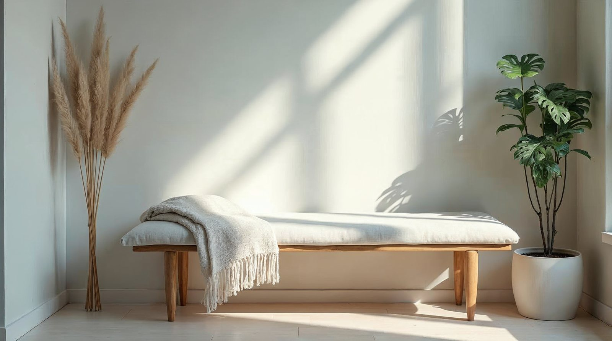
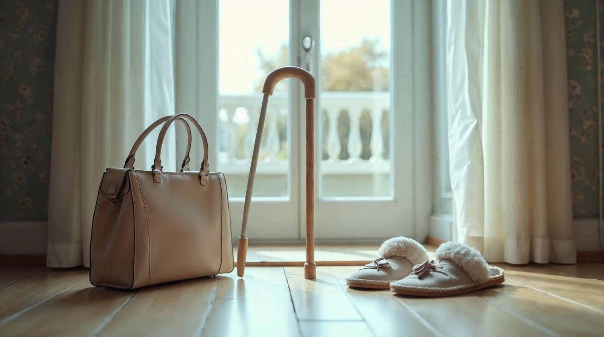
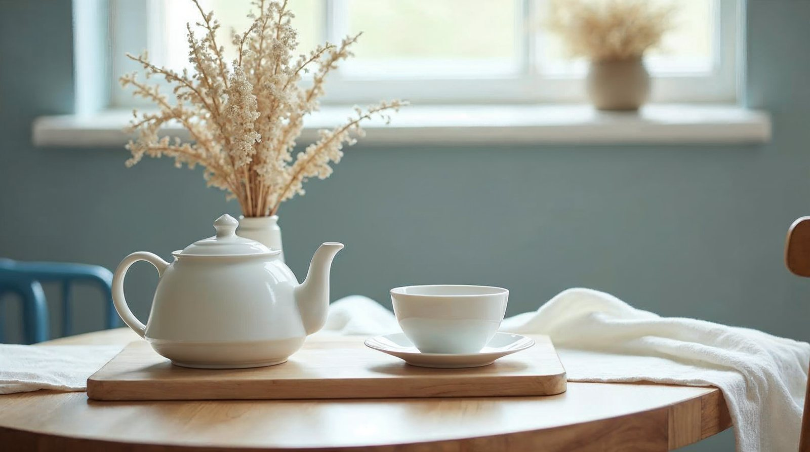

이종호 한의사 감수좋은꿈참사랑한의원 대표원장 (한의사 면허번호 19769)발행 2026-11-23 · 수정 2026-11-26
이 글의 차례
- 왜 미리 준비하면 좋을까요
- 혼자 오시면 어떤 순간이 가장 막막하실까요?
- 혼자 와도 되는 날과 가족과 함께 오면 좋은 날은 어떻게 다를까요?
- 먼저 이렇게 여쭙니다
- 방문 전에 먼저 해 볼 수 있는 것
- 한의원에서 함께 살필 수 있는 경우
- 며칠 지켜보고, 언제 바로 연락할까요
- 상황별로 이렇게 해 보세요
- 스스로 확인해 보는 체크 목록
- 첫 방문 진료는 이렇게 진행됩니다
- 메모는 이렇게 적어 오시면 편합니다
- 오시는 날 이렇게 준비하시면 편합니다
- 다시 오실 때는 이렇게 이어서 봅니다
- 이렇게 기록해 오시면 상담이 쉬워집니다
- 혼자 오시는 날 오가는 길에서 챙기실 것
- 기억이 자꾸 흐려진다고 느끼실 때는요?
- 집에서는 이렇게 짧게 적어 두세요
- 혼자 지내실 때 생활에서 챙겨 보실 것
- 진료를 마치고 나가실 때
- 다음 예약은 이렇게 잡아 두세요
- 진료실에서 이렇게 말씀하셔도 괜찮습니다
- 이런 증상은 먼저 확인이 필요합니다
- 함께 읽으면 좋은 글
가족 없이 혼자 한의원에 오시는 어르신도 많습니다. 몇 가지만 미리 챙기면 낯선 접수 과정과 상담이 훨씬 편해지고, 집에 돌아가서 지킬 일도 잊지 않을 수 있습니다.
왜 미리 준비하면 좋을까요
- 진료실에 앉으면 긴장해서 하려던 말이 잘 떠오르지 않는 경우가 많습니다.
- 약 이름은 비슷한 것이 많아 기억만으로 말하면 빠지거나 헷갈리기 쉽습니다.
- 잘 들리지 않거나 글씨가 작으면 설명을 놓치고도 다시 묻기 미안해하는 분이 많습니다.
- 몸이 갑자기 불편해질 때 연락할 사람이 적혀 있으면 서로 안심이 됩니다.
혼자 오시면 어떤 순간이 가장 막막하실까요?
처음 오신 어르신께 여쭤 보면 막막했던 순간이 대개 비슷합니다. 접수에서 기본 정보를 적어야 할 때, 진료실에서 질문이 이어질 때, 집에 돌아가서 "아까 뭐라고 했더라" 하실 때입니다.
이 세 순간은 준비 몇 가지로 한결 가벼워집니다. 접수에서는 적어 온 메모를 그대로 보여 주시면 되고, 진료실에서는 천천히 말해 달라고 하시면 됩니다. 집에서 지킬 일은 제가 짧게 말씀드릴 때 그 자리에서 적어 가시면 됩니다.
혼자 오신 것을 미안해하시는 분도 계신데, 그러실 필요가 없습니다. 본인이 직접 몸 이야기를 들려주시면 저도 더 자세히 여쭐 수 있어 도움이 될 때가 많습니다.
혼자 와도 되는 날과 가족과 함께 오면 좋은 날은 어떻게 다를까요?
- 불편한 곳이 한두 군데이고 오가는 길이 익숙하다면 혼자 오셔도 충분합니다.
- 드시는 약이 여러 가지이고 최근에 약이 바뀌었다면, 첫 진료만큼은 약을 잘 아는 가족과 함께 오시면 설명이 빠지지 않습니다.
- 기억이 자꾸 흐려진다고 느끼시거나 가족이 그런 걱정을 한다면, 한 번은 가족과 함께 오셔서 집에서의 모습을 같이 들려주시면 좋습니다.
- 무릎이나 허리가 불편해 오가는 길이 부담스러운 날, 비나 눈이 오는 날은 혼자 무리하지 마시고 가족과 오시거나 전화로 날을 바꾸셔도 됩니다.
먼저 이렇게 여쭙니다
- 지금 가장 불편한 곳은 어디이고 언제부터인가요?
- 드시는 약이나 영양제가 있나요?
- 최근에 넘어지거나 어지러운 일이 있었나요?
- 잠과 식사, 화장실은 평소와 같나요?
방문 전에 먼저 해 볼 수 있는 것
- 복용 중인 약 봉투를 챙기거나 약 이름을 종이에 적기
- 불편한 곳과 시작된 때를 큰 글씨로 메모하기
- 평소 쓰는 안경, 보청기, 지팡이 챙기기
- 급할 때 연락할 가족 연락처를 메모 뒤에 적어 두기
- 진료 중 "천천히 다시 말씀해 주세요"라고 편하게 요청하기
한의원에서 함께 살필 수 있는 경우
- 무릎이나 허리가 불편해 걷거나 앉았다 일어서는 동작이 부담될 때 움직이는 모습을 함께 살핍니다.
- 밤에 자주 깨거나 낮에 기운이 없다고 느낄 때 잠과 식사, 활동량을 함께 묻습니다.
- 소화가 더디고 입맛이 줄었다고 느낄 때 식사 시간과 양을 함께 살핍니다.
좋은꿈참사랑한의원에서는 혼자 오셨든 가족과 오셨든 진료 순서가 같습니다. 말씀을 끝까지 듣고, 필요하다고 판단될 때 다른 진찰을 더하며, 귀가 전에는 집에서 지킬 일을 짧게 말씀드리니 메모지에 적어 가셔도 됩니다.

며칠 지켜보고, 언제 바로 연락할까요
- 무릎이나 허리가 며칠 뻐근한 정도라면 메모해 두셨다가 예약한 날 말씀하셔도 됩니다.
- 불편한 곳이 1~2주 넘게 줄지 않거나, 밤잠을 설칠 만큼 아프다면 미루지 말고 진료를 받아 보세요.
- 입맛이 줄어 끼니를 거르는 날이 일주일 넘게 이어지거나 몸무게가 눈에 띄게 줄었다면, 병원 검사를 먼저 받아 보시기를 권합니다.
상황별로 이렇게 해 보세요
예를 들어 혈압약과 당뇨약을 함께 드시는 어르신이라면, 약 봉투를 모두 챙겨 오시거나 약 봉투를 휴대폰으로 찍어 오시면 됩니다. 영양제나 건강식품도 함께 보여 주시면 상담에 도움이 됩니다.
예를 들어 귀가 어두워 전화로 예약하기 어려운 어르신이라면, 가족이나 이웃에게 네이버 예약을 부탁하시거나, 직접 오셔서 다음 예약을 잡고 가셔도 됩니다. 글로 묻는 것이 편하시면 카카오톡 상담을 쓰셔도 됩니다.
예를 들어 지팡이를 쓰시며 상도역에서 걸어오시는 어르신이라면, 3번 출구에서 약 200m 직진한 뒤 오거리에서 우회전해 약 200m 오시는 길을 천천히 오시면 됩니다. 한의원은 신성빌딩 3층·5층이고 건물에 엘리베이터가 있습니다. 걷기가 부담되는 날은 방문 전에 전화로 여쭤 보세요.
스스로 확인해 보는 체크 목록
- 드시는 약 이름이나 약 봉투를 챙기셨나요?
- 불편한 곳과 시작된 때를 큰 글씨로 적어 두셨나요?
- 안경, 보청기, 지팡이를 챙기셨나요?
- 가족 연락처를 메모 뒤에 적어 두셨나요?
- 최근 넘어지거나 어지러웠던 날을 기억해 두셨나요?
- 진료가 끝나면 집에서 지킬 일을 적어 갈 메모지가 있나요?
- 다음 예약 날짜를 크게 적어 둘 달력이 있나요?
첫 방문 진료는 이렇게 진행됩니다
처음 오시면 접수에서 기본 정보를 적으시는데, 글씨 쓰기가 어려우시면 말씀해 주세요. 진료실에서는 모든 분의 맥을 먼저 짚고, 맥을 짚으며 불편한 곳과 언제부터인지, 드시는 약, 잠과 식사를 천천히 여쭙습니다. 걸어오시느라 숨이 차셨다면 잠시 쉬신 뒤에 짚습니다.
무릎이나 허리가 불편하시면 앉았다 일어서는 동작이나 걷는 모습을 함께 살피기도 합니다. 오늘 받을 치료와 이유를 먼저 설명해 드리고, 잘 들리지 않으면 언제든 다시 여쭤 보셔도 됩니다.
귀가 전에는 집에서 지킬 일과 다음 방문 날짜를 짧게 말씀드립니다. 초진은 진찰 시간이 있어 재진보다 오래 걸릴 수 있으니, 오시는 날은 다른 일정을 빠듯하게 잡지 않으시는 편이 마음이 편합니다.
메모는 이렇게 적어 오시면 편합니다
- 맨 위에 이름과 가족 연락처를 크게 적습니다.
- 그 아래 '가장 불편한 곳 한 가지'와 '언제부터'를 적습니다. 여러 곳이 불편하면 불편한 순서대로 줄을 바꿔 적으시면 됩니다.
- 마지막 줄에는 '꼭 물어보고 싶은 것'을 한두 가지 적어 두면, 진료실에서 긴장해도 잊지 않으실 수 있습니다.
- 진료 뒤 들은 내용은 같은 종이 뒷면에 적어 오시면 다음 진료 때 함께 보기 좋습니다.

오시는 날 이렇게 준비하시면 편합니다
- 진료는 평일 09:30~20:00(점심 13:00~14:00), 토·일·공휴일 09:30~15:00이니, 덥거나 춥지 않은 시간을 골라 오세요. 원장별 진료 일정은 방문 전 전화로 확인해 주세요.
- 아침 약을 드시는 분은 평소처럼 드시고 오시면 됩니다. 약은 진료를 이유로 임의로 거르지 않습니다.
- 소매를 걷기 쉽고 무릎이나 허리를 살피기 편한 옷을 입고 오시면 진찰이 수월합니다.

다시 오실 때는 이렇게 이어서 봅니다
다시 오셔도 맥을 다시 짚고, 지난번 가장 불편하셨던 곳이 어떻게 지냈는지, 집에서 지키기로 한 일은 어떠셨는지부터 여쭙습니다. 잠과 식사, 화장실 이야기도 이어서 여쭙습니다. 담당 원장이 다른 날에도 이전 기록을 보고 이어서 진료하니, 같은 이야기를 처음부터 다시 하시지 않아도 됩니다.
가족이 멀리 살아 함께 오기 어렵다면, 진료 뒤 들은 내용을 메모해 두셨다가 전화로 가족에게 알려 주셔도 좋습니다. 가족이 궁금한 점이 있으면 방문 전에 02-815-7510으로 문의하셔도 됩니다.
이렇게 기록해 오시면 상담이 쉬워집니다
- 약 이름 목록(약 봉투 사진도 좋습니다)
- 불편한 곳, 시작된 때, 심해지는 시간
- 최근 넘어지거나 어지러웠던 날
- 다른 의료기관에서 들은 설명이나 검사 결과지
혼자 오시는 날 오가는 길에서 챙기실 것
- 집을 나서기 전에 화장실을 다녀오시고, 작은 물병 하나를 챙기세요.
- 휴대폰은 충전해서 챙기세요.
- 횡단보도 신호가 깜빡이면 무리해서 건너지 말고 다음 신호를 기다리세요.
- 걷다가 힘이 들면 가까운 벤치나 건물 입구에서 잠깐 쉬었다 오셔도 됩니다. 늦어질 것 같으면 02-815-7510으로 알려 주세요.
기억이 자꾸 흐려진다고 느끼실 때는요?
약을 드셨는지 헷갈리는 날이 잦다면 요일별 칸이 나뉜 약통을 써 보세요. 드신 칸이 비어 있으니 한눈에 확인할 수 있습니다. 병원 예약이나 약속은 달력 한 곳에만 적어 두시는 것이 좋습니다.
깜빡하는 일이 늘었다고 해서 모두 치매는 아닙니다. 기억력이 떨어지는 이유는 나이 말고도 잠이 모자라거나, 마음이 가라앉았거나, 드시는 약이나 갑상선 문제 때문일 때도 있습니다.
걱정되시면 진료 때 편하게 말씀해 주세요. 일상생활이 어려울 만큼이라면 치매안심센터나 신경과의 인지기능 검사를 받아 보시기를 권합니다.
집에서는 이렇게 짧게 적어 두세요
진료 뒤 집에서 지내시는 동안 달력 한 칸에 짧게 적어 두시면, 다음에 오셨을 때 이야기가 쉽게 이어집니다. 길게 쓰실 필요는 없고 세 가지만 보시면 됩니다.
- 아픈 정도: '많이, 조금, 괜찮음' 가운데 하나를 적습니다.
- 잠: 밤에 몇 번 깼는지 숫자로 적습니다.
- 식사: 세 끼를 드셨으면 동그라미, 거르셨으면 세모로 표시합니다.
일주일만 모여도 어떤 날 더 불편하셨는지, 잠을 설친 다음 날 무릎이 더 무거웠는지 같은 흐름이 보입니다. 그 달력을 그대로 들고 오시면 됩니다.
혼자 지내실 때 생활에서 챙겨 보실 것
- 아침에 눈을 뜨시면 누운 채로 발목을 몇 번 돌리고, 천천히 앉았다가 일어나세요. 바로 서면 어지러울 수 있습니다.
- 물은 한꺼번에 많이 드시기보다 한 잔씩 자주 드시는 것이 좋습니다. 목이 마르지 않아도 정해 둔 때에 한 잔씩 드셔 보세요.
- 혼자 드시는 끼니는 대충 넘기기 쉽습니다. 두부, 달걀, 생선처럼 씹기 편한 반찬을 한 가지라도 곁들여 보세요.
- 하루 한 번은 집 앞이라도 걸으며 햇빛을 쬐어 보세요. 낮에 조금 움직이면 밤잠에도 보탬이 될 수 있습니다.
- 화장실과 현관처럼 자주 다니는 곳에는 미끄럼 방지 매트를 깔고, 밤에는 작은 등을 켜 두시면 마음이 놓입니다.
신장이나 심장 질환, 당뇨로 식사와 물의 양을 안내받으셨다면 치료받는 병원의 지침을 먼저 따르세요.
혼자 지내시면 넘어지거나 몸이 갑자기 불편할 때 알리는 것이 늦어질 수 있습니다. 그래서 저는 어르신들께 전화기와 친해지시라고 말씀드립니다. 휴대전화는 집 안에서도 늘 손 닿는 곳에, 되도록 몸에 지니고 계세요.
진료를 마치고 나가실 때
나가시기 전에 오늘 들은 '집에서 지킬 일'을 한 번 소리 내어 읽어 보세요. 빠진 것이 있으면 그 자리에서 바로 여쭤 보시면 됩니다.
다음 예약은 이렇게 잡아 두세요
진료를 마치고 나가실 때 다음 방문 날짜를 바로 정해 두시면 다시 전화하실 필요가 없습니다. 날짜와 시각을 메모지에 적어 달력 옆이나 냉장고 문에 붙여 두세요. 장날, 경로당 모임처럼 정해진 일정과 겹치지 않는지 그 자리에서 한 번 더 떠올려 보시면 좋습니다.
사정이 생기면 전화로 날짜를 옮기시면 됩니다. 저희는 예약하신 분이 말없이 오지 않으시면 전화를 드립니다. 재촉하려는 것이 아니라, 혹시 무슨 일이 있으신가 걱정이 되어서입니다.
진료실에서 이렇게 말씀하셔도 괜찮습니다
- "제가 귀가 어두우니 조금 크게 말씀해 주세요."
- "방금 하신 말씀을 종이에 적어 주실 수 있을까요?"
- "그 약 이름을 한 번 더 말씀해 주세요."
- "집에서 무엇부터 하면 되는지 한 가지만 알려 주세요."
이런 말씀은 조금도 번거로운 부탁이 아닙니다. 제가 드린 말씀이 집에서 지켜져야 진료가 이어진다고 생각하기에, 몇 번이고 다시 여쭤 보셔도 괜찮습니다.
혼자 길을 나서 여기까지 오시는 것만으로도 애쓰신 하루입니다. 다음에 오시면 지난번 적어 가신 '집에서 지킬 일'이 해 보시니 어땠는지부터 여쭙겠습니다.
이런 증상은 먼저 확인이 필요합니다
- 갑작스러운 가슴 통증이나 숨 가쁨, 넘어진 뒤 일어서거나 걷기 어려운 경우
- 의식이 흐려지거나 말이 어눌해지거나 한쪽 팔다리에 힘이 빠지는 느낌
이런 신호가 있으면 한의원보다 가까운 병원이나 응급실을 먼저 찾으세요.
함께 읽으면 좋은 글
- 연세 드신 부모님을 모시고 처음 한의원에 갈 때는 무엇을 챙기면 좋을까요?
- 어르신이 처음 진맥을 받으실 때 무엇을 보고 어떤 것을 여쭙나요?
- 무릎이나 허리가 불편한데 상도역에서 한의원까지 걸어오려면 어떻게 오면 좋을까요?

여쭙는 것
- 지금 가장 불편한 곳은 어디이고 언제부터인가요?
- 드시는 약이나 영양제가 있나요?
- 최근에 넘어지거나 어지러운 일이 있었나요?
한의원에서 함께 살필 것
- 무릎이나 허리가 불편해 걷거나 앉았다 일어서는 동작이 부담될 때 움직이는 모습을 함…
- 밤에 자주 깨거나 낮에 기운이 없다고 느낄 때 잠과 식사, 활동량을 함께 묻습니다.
- 소화가 더디고 입맛이 줄었다고 느낄 때 식사 시간과 양을 함께 살핍니다.
먼저 확인이 필요한 신호
- 갑작스러운 가슴 통증이나 숨 가쁨, 넘어진 뒤 일어서거나 걷기 어려운 경우
- 의식이 흐려지거나 말이 어눌해지거나 한쪽 팔다리에 힘이 빠지는 느낌
한눈에 보는 표
| 구분 | 핵심 |
|---|---|
| 여쭙는 것 | 지금 가장 불편한 곳은 어디이고 언제부터인가요? 드시는 약이나 영양제가 있나요? |
| 한의원에서 함께 살필 것 | 무릎이나 허리가 불편해 걷거나 앉았다 일어서는 동작이 부담될 때 움직이는 모습을 함께 살핍니다. 밤에 자주 깨거나 낮에 기운이 없다고 느낄 때 잠과 식사, 활동량을 함께 묻습니다. |
| 먼저 확인이 필요한 신호 | 갑작스러운 가슴 통증이나 숨 가쁨, 넘어진 뒤 일어서거나 걷기 어려운 경우 의식이 흐려지거나 말이 어눌해지거나 한쪽 팔다리에 힘이 빠지는 느낌 |
자주 묻는 질문
글씨를 쓰기 어려운데 접수는 어떻게 하나요?
어려운 부분은 접수 때 말씀해 주세요. 걱정되면 방문 전에 02-815-7510으로 미리 문의하셔도 됩니다.
귀가 잘 안 들리는데 괜찮은가요?
보청기를 착용하고 오시고, 잘 들리지 않으면 바로 말씀해 천천히 다시 설명을 들으시면 됩니다.
건물에 엘리베이터가 있나요?
네, 신성빌딩에는 엘리베이터가 있습니다. 휠체어로 오시거나 차로 오셔서 주차·정차가 필요하면 방문 전에 02-815-7510으로 확인해 주세요.
진료 뒤 들은 내용을 잊어버리면 어떻게 하나요?
다음 방문 때 다시 여쭤 보시거나 02-815-7510으로 문의하시면 됩니다. 들은 내용은 그 자리에서 메모해 가시기를 권합니다.
좋은꿈참사랑한의원은 재진 때 지난번 이야기부터 이어서 여쭙니다. 진료시간과 예약은 오시는 길에서 확인하세요.
어디서 상담받을 수 있나요?
좋은꿈참사랑한의원은 서울 동작구 만양로2길 2 신성빌딩 3층·5층(서울 동작구 상도동, 7호선 상도역 3번 출구 근처)에 있습니다. 한의사 3명(이종호 대표원장, 조영기 수석진료원장, 정원영 진료원장)이 진료합니다. 진료시간은 평일 09:30~20:00(점심 13:00~14:00), 토·일·공휴일 09:30~15:00이며, 방문 전 전화로 확인을 권합니다. 예약은 네이버 예약, 카카오톡 상담, 전화 02-815-7510로 받습니다.
이 글은 일반적인 건강 정보이며 개인의 진단이나 치료를 대신하지 않습니다. 증상이 있거나 복용 중인 약이 있다면 진료를 통해 확인하세요. 치료 효과는 개인마다 다를 수 있습니다.
작성 기준: 일반적으로 알려져 있는 건강 정보를 참고해 정리했습니다(대표원장 감수). 증상 기록은 1~2주 동안 하루 1회, 비슷한 시간에 적어 오시면 지난 상태와 비교하기 쉽습니다.